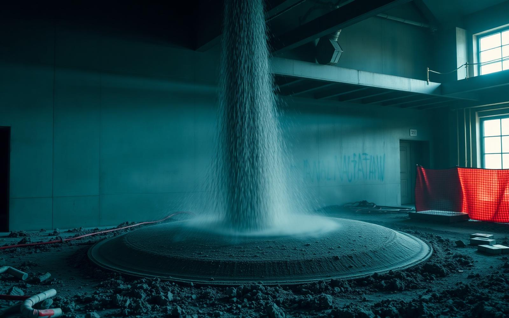

Industries / Cement & Concrete
Aragonite for Cement & Concrete.
Natural oolitic aragonite with documented, differentiated effects on cement rheology and early strength — positioned for specialty and high-performance concrete, not commodity bulk fill.
The role
What carbonate does in modern cement.
Ground limestone (CaCO3) is an established constituent of modern cement. Portland-limestone cements under EN 197-1 permit up to 35% limestone (minimum 70% CaCO3), and Portland-limestone and SCM-blended cements have overtaken plain Portland cement in market share. Its contribution is largely a “filler effect,” with a minor chemical reaction alongside.
Portland-limestone cement
EN 197-1 permits up to 35% limestone (minimum 70% CaCO3); Portland-limestone and SCM-blended cements have overtaken plain Portland cement in market share.
The filler effect
Limestone provides nucleation surface that accelerates cement hydration — the dominant way finely ground carbonate contributes to the mix.
Carboaluminate reaction
Beyond the physical filler effect, carbonate participates in a minor chemical (carboaluminate) reaction within the hydrating cement system.
Why aragonite
A carbonate that behaves distinctly — and it is documented.
Unlike the water-treatment case, aragonite’s value in cement is not about faster dissolution. It is that the aragonite polymorph has shown specific, peer-reviewed effects on how cement pastes build and gain early strength — effects that calcite and vaterite did not produce.
Yield stress & structural build-up
Peer-reviewed rheology work found that aragonite — unlike calcite or vaterite — increased the yield stress and structural build-up rate of cement pastes, pointing to a role where early structural build matters, such as 3D-concrete printing and shotcrete.
Whisker microfiber reinforcement
Aragonite and calcite CaCO3 whiskers have been studied as a microfiber filler that improved the flexural and compressive strength of cement paste.
These are specific, sourced findings for particular applications — not a claim that aragonite is universally better than limestone in cement. Their relevance to your mix should be established by evaluation.
What matters to a construction buyer
The specs that decide fit — and where to get them.
These are the evaluation criteria for a carbonate in cement and concrete. Where a figure depends on the delivered grade, request current documentation rather than relying on a published number.
Fineness (Blaine)
The filler effect scales with fineness, measured as Blaine specific surface. AragoCor does not publish a fixed Blaine figure here — request current documentation for the grade under evaluation.
CaCO3 content & consistency
Portland-limestone cement standards set minimum carbonate content, so content and lot-to-lot consistency matter. Representative composition is 97.8% CaCO3 for natural oolitic aragonite; treat this as representative, not a lot guarantee, and confirm current lot documentation.
Delivered cost per performance
Construction is price- and logistics-sensitive, so delivered cost per unit of performance at volume is decisive. This is where Stockton distribution and freight planning factor into an evaluation.
The honest framing
Specialty concrete, not bulk replacement.
A differentiated specialty material. Aragonite has documented, differentiated effects on cement rheology and early strength that are worth evaluation, particularly in specialty and high-performance applications such as 3D-concrete printing and shotcrete.
Not a commodity bulk fill. In ordinary bulk cement replacement it would compete directly with cheap quarried limestone on price per ton and would likely lose. We position it toward specialty concrete where its documented behavior matters — not as a bulk cement replacement.
Request data for specialty cement and concrete evaluation.
Tell us about your mix design or printing/shotcrete program and we will share the technical documentation we hold for evaluation.